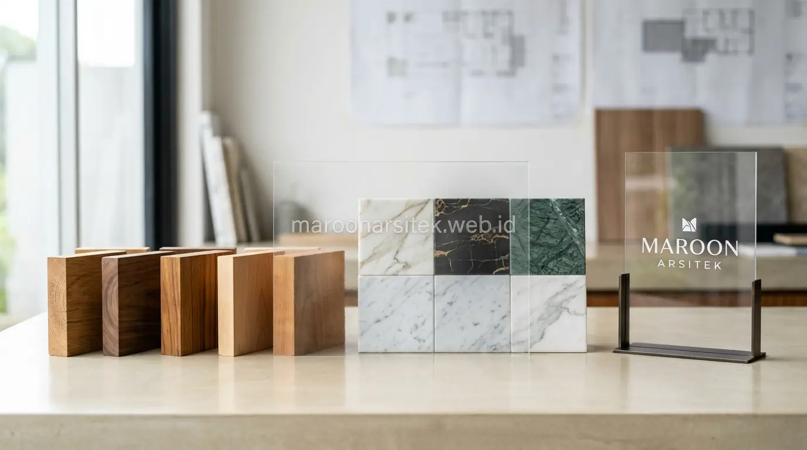

Hasil maksimal dari jasa desain rumah sangat bergantung pada proses komunikasi konsep yang terstruktur sejak awal, mulai dari penyampaian kebutuhan, penggunaan referensi visual, hingga sesi review desain sebelum gambar kerja difinalisasi. Maroon Arsitek menerapkan alur komunikasi yang jelas melalui layanan jasa desain rumah untuk mencegah kesalahpahaman konsep antara klien dan tim desain sepanjang proses berlangsung.
Kesalahan komunikasi konsep sering menjadi penyebab utama hasil desain yang tidak sesuai ekspektasi klien, padahal masalah ini dapat dicegah melalui langkah-langkah komunikasi yang tepat sejak sesi konsultasi pertama. Bagian berikut menguraikan langkah yang diterapkan untuk memastikan konsep desain benar-benar tersampaikan dengan akurat.
Sesi Briefing Kebutuhan sebagai Langkah Awal yang Krusial
Sesi briefing kebutuhan menjadi langkah awal yang menentukan arah keseluruhan proses desain, di mana klien menyampaikan kebutuhan fungsional, preferensi gaya, dan batasan anggaran secara rinci kepada tim desain sebelum konsep awal disusun. Kualitas briefing ini sangat memengaruhi ketepatan hasil desain pada tahap selanjutnya.
Tim desain menggunakan pertanyaan terstruktur untuk menggali kebutuhan klien secara mendalam, mencakup kebiasaan sehari-hari penghuni, jumlah anggota keluarga, dan aktivitas spesifik yang perlu diakomodasi dalam tata ruang rumah yang akan dirancang.
Dokumentasi hasil briefing menjadi acuan tertulis yang dapat dirujuk kembali sepanjang proses desain, mengurangi risiko kesalahpahaman akibat interpretasi yang berbeda antara apa yang disampaikan klien dan apa yang dipahami tim desain.
Pertanyaan Terstruktur untuk Menggali Kebutuhan Tersembunyi
Kebutuhan yang sering tidak disadari klien pada awalnya dapat digali melalui pertanyaan terstruktur mengenai kebiasaan harian, seperti kebutuhan penyimpanan atau area kerja, yang mungkin belum terpikirkan sebelum sesi briefing dilakukan.
Pertanyaan ini membantu tim desain memahami kebutuhan menyeluruh klien, sehingga konsep yang dihasilkan benar-benar mencerminkan gaya hidup penghuni, bukan hanya berdasarkan permintaan eksplisit yang disampaikan di awal.
Penggunaan Referensi Visual untuk Menyamakan Persepsi
Penggunaan referensi visual, seperti moodboard atau contoh gambar rumah dengan gaya yang diinginkan, membantu menyamakan persepsi antara klien dan tim desain mengenai konsep estetika yang dituju, mengurangi risiko kesalahpahaman akibat perbedaan interpretasi istilah desain. Referensi ini menjadi jembatan komunikasi yang lebih efektif dibanding deskripsi verbal semata.
Klien didorong untuk mengumpulkan referensi visual dari berbagai sumber sebelum sesi konsultasi, memberikan gambaran konkret mengenai gaya, warna, dan suasana yang diinginkan untuk rumah yang akan dirancang.
Tim desain kemudian menyusun moodboard gabungan berdasarkan referensi yang diberikan klien, memastikan kesamaan persepsi tercapai sebelum konsep desain awal mulai dikembangkan lebih lanjut menjadi denah dan visualisasi.

Penyusunan Moodboard Gabungan dari Referensi Klien
Kebutuhan kesamaan persepsi visual dijawab melalui penyusunan moodboard gabungan yang mengombinasikan berbagai referensi yang diberikan klien menjadi satu arahan desain yang koheren sebelum proses desain lebih lanjut dilakukan.
Moodboard ini menjadi alat komunikasi visual yang efektif, memungkinkan klien memberikan persetujuan atau masukan pada tahap awal sebelum konsep dikembangkan menjadi gambar kerja yang lebih detail dan memakan waktu.
Sesi Review Desain Bertahap Sebelum Finalisasi Gambar Kerja
Sesi review desain dilakukan secara bertahap, memberikan kesempatan bagi klien untuk memberikan masukan pada setiap tahap perkembangan desain, mulai dari konsep denah hingga visualisasi tiga dimensi, sebelum gambar kerja final disusun bersama tim jasa arsitek kami. Pendekatan bertahap ini mencegah revisi besar yang memakan waktu apabila masukan baru diberikan pada tahap akhir.
Setiap sesi review didokumentasikan secara tertulis, mencatat masukan dan kesepakatan yang dicapai, sehingga tidak terjadi perubahan arah desain yang tidak konsisten antara satu sesi review dengan sesi berikutnya.
Jumlah sesi review disesuaikan dengan kompleksitas proyek, memberikan ruang yang cukup bagi klien untuk memastikan konsep desain benar-benar sesuai kebutuhan sebelum memasuki tahap gambar kerja detail yang siap digunakan untuk konstruksi.
Dokumentasi Masukan pada Setiap Sesi Review
Kebutuhan konsistensi arah desain dijawab melalui dokumentasi tertulis pada setiap sesi review, mencatat masukan klien dan kesepakatan yang telah dicapai sebagai acuan bagi tim desain dalam mengembangkan tahap selanjutnya.
Dokumentasi ini mencegah pengulangan diskusi pada poin yang telah disepakati sebelumnya, sekaligus menjadi rujukan apabila terjadi perbedaan pemahaman mengenai kesepakatan yang telah dibuat pada sesi-sesi sebelumnya.